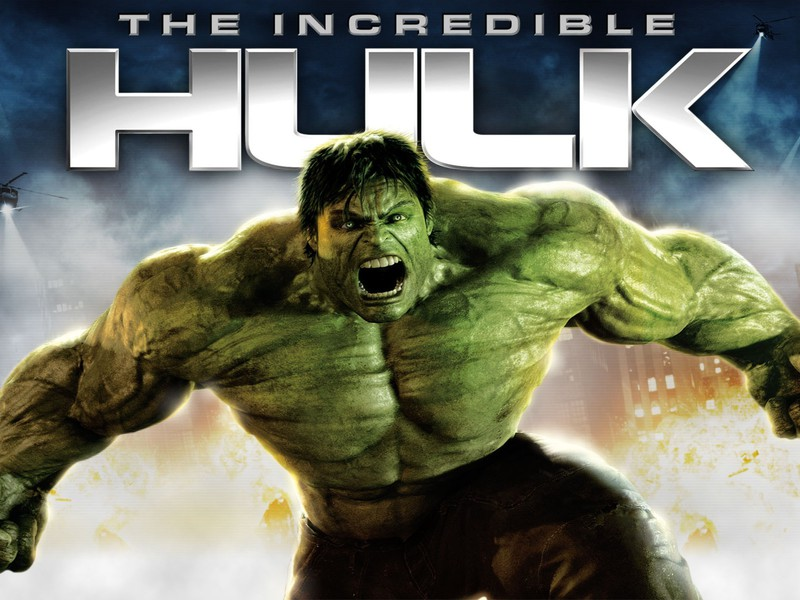

Hulk smash!" It's incredibly (pardon the pun) important to remember that when going in to see the Marvel Studios requel of The Incredible Hulk. Sure, there's angst the story's hero is cursed with a monstrous alter ego that only appears when he gets "excited" (in both good and bad ways). Sure, there's tension the story's hero is constantly on the run from "Big Brother-like" forces looking to capture and exploit his beast within. But ultimately the film, much like the comic book from which it's based, is about destruction.
Think a smaller scale Cloverfield and you're in the right ballpark. To further hammer the point home: An introspective tale focusing on father-son issues this is not (sorry, Ang Lee).
To that end, The Incredible Hulk delivers and it delivers well. The film starts off with Dr. Bruce Banner (Edward Norton) desperately searching for a cure to the gamma radiation which has poisoned his cells and unleashed a primal force of rage within him known as The Hulk. Living in the shadows and cut off from a life with the woman he loves, Dr. Betty Ross (Liv Tyler), Bruce knows that a military machine led by General "Thunderbolt" Ross (William Hurt) is seeking to capture and brutally exploit his power. As all three grapple with the secrets that led to The Hulk's creation (indeed, they all played a role), they are confronted with a vicious new enemy known as The Abomination a monstrosity whose destructive strength exceeds even that of The Hulk's. To defeat this nemesis, the film's hero must make an agonizing choice: accept a peaceful life as Bruce Banner or find heroism in the creature he holds inside.